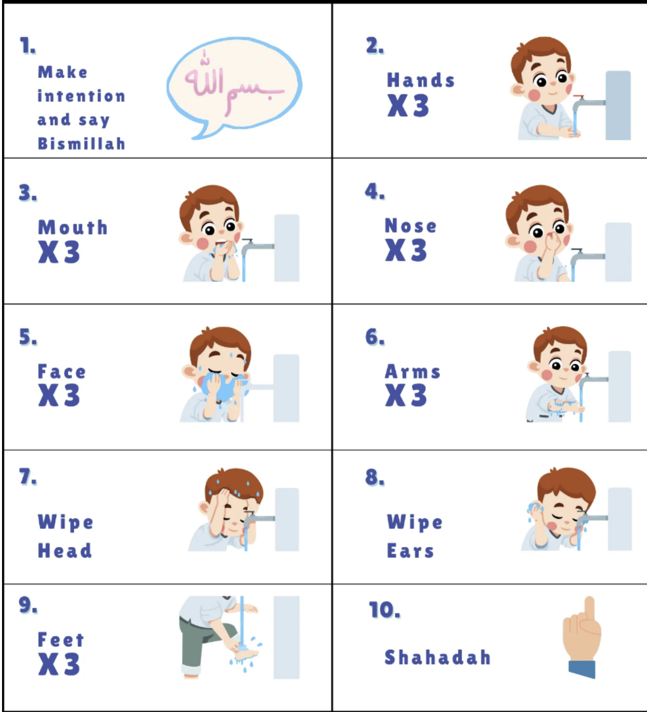

Wudu (ablution) in Islam is a purification ritual essential for prayer, symbolizing physical and spiritual cleanliness. It prepares Muslims for Salah by washing away impurities, fostering mindfulness and humility. Wudu reinforces the importance of purity in worship, discipline, and readiness to engage in a direct connection with Allah.
